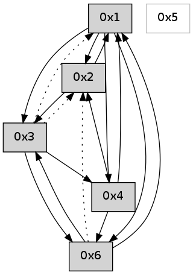

>> << IDX [start] -100 -25 -5 +0 +5 +25 +100 [570.010873079]
 Previous packets
----------------------------------------------------------------------
565.089790 beacon01(adaf) #0 coord=01,02,05,03,04,06 cycle=432.0ms assoc
-- color-indic=0 64 56 92
565.099751 beacon02(adaf) #0 coord=01,02,05,03,04,06 cycle=432.0ms assoc 64 07 6d
565.109751 beacon05(adaf) #0 coord=01,02,05,03,04,06 cycle=432.0ms assoc 64 a1 47
565.119752 beacon03(adaf) #0 coord=01,02,05,03,04,06 cycle=432.0ms assoc 64 3d 63
565.129751 beacon04(adaf) #0 coord=01,02,05,03,04,06 cycle=432.0ms assoc 64 9b 49
565.139754 beacon06(adaf) #0 coord=01,02,05,03,04,06 cycle=432.0ms assoc 64 ef 55
565.151433 [Hello(4): seq=365 sym=6,3,1 sysInfo= stat=6:9,0,0,0/3:0,0,0,0/1:1,0,0,0]
565.157505 [Hello(1): seq=264 sym=2,3,4 sysInfo= stat=2:8,0,0,0/3:0,0,0,0/4:14,0,0,0]
----------------------------------------------------------------------
565.581898 beacon01(adaf) #0 coord=01,02,05,03,04,06 cycle=432.0ms assoc
-- color-indic=0 64 92 fd
565.591861 beacon02(adaf) #0 coord=01,02,05,03,04,06 cycle=432.0ms assoc 64 c3 02
565.601860 beacon05(adaf) #0 coord=01,02,05,03,04,06 cycle=432.0ms assoc 64 65 28
565.611859 beacon03(adaf) #0 coord=01,02,05,03,04,06 cycle=432.0ms assoc 64 f9 0c
565.621861 beacon04(adaf) #0 coord=01,02,05,03,04,06 cycle=432.0ms assoc 64 5f 26
565.631860 beacon06(adaf) #0 coord=01,02,05,03,04,06 cycle=432.0ms assoc 64 2b 3a
565.643537 [Hello(2): seq=860 sym=4,1,3 sysInfo= stat=4:0,0,0,0/1:14,0,0,0/3:4,0,0,0]
----------------------------------------------------------------------
566.074006 beacon01(adaf) #0 coord=01,02,05,03,04,06 cycle=432.0ms assoc
-- color-indic=0 64 de 4d
566.083967 beacon02(adaf) #0 coord=01,02,05,03,04,06 cycle=432.0ms assoc 64 8f b2
566.093967 beacon05(adaf) #0 coord=01,02,05,03,04,06 cycle=432.0ms assoc 64 29 98
566.103967 beacon03(adaf) #0 coord=01,02,05,03,04,06 cycle=432.0ms assoc 64 b5 bc
566.113969 beacon04(adaf) #0 coord=01,02,05,03,04,06 cycle=432.0ms assoc 64 13 96
566.123970 beacon06(adaf) #0 coord=01,02,05,03,04,06 cycle=432.0ms assoc 64 67 8a
566.135658 [Hello(4): seq=366 sym=6,3,1,2 sysInfo= stat=6:9,0,0,0/3:0,0,0,0/1:2,0,0,0/2:0,0,0,0]
566.138429 [Hello(1): seq=265 sym=2 sysInfo= stat=2:9,0,0,0]
----------------------------------------------------------------------
566.566114 beacon01(adaf) #0 coord=01,02,05,03,04,06 cycle=432.0ms assoc
-- color-indic=0 64 1a 22
566.576074 beacon02(adaf) #0 coord=01,02,05,03,04,06 cycle=432.0ms assoc 64 4b dd
566.586074 beacon05(adaf) #0 coord=01,02,05,03,04,06 cycle=432.0ms assoc 64 ed f7
566.596074 beacon03(adaf) #0 coord=01,02,05,03,04,06 cycle=432.0ms assoc 64 71 d3
566.606076 beacon04(adaf) #0 coord=01,02,05,03,04,06 cycle=432.0ms assoc 64 d7 f9
566.616075 beacon06(adaf) #0 coord=01,02,05,03,04,06 cycle=432.0ms assoc 64 a3 e5
566.627719 [Hello(6): seq=281 sym=3,4,1 sysInfo= stat=3:5,0,0,0/4:1,0,0,0/1:7,0,0,0]
566.631449 [Hello(2): seq=861 sym=4,1 asym=3 sysInfo= stat=4:0,0,0,0/1:15,0,0,0/3:5,0,0,0]
----------------------------------------------------------------------
567.058221 beacon01(adaf) #0 coord=01,02,05,03,04,06 cycle=432.0ms assoc
-- color-indic=0 64 57 25
567.068182 beacon02(adaf) #0 coord=01,02,05,03,04,06 cycle=432.0ms assoc 64 06 da
567.078182 beacon05(adaf) #0 coord=01,02,05,03,04,06 cycle=432.0ms assoc 64 a0 f0
567.088183 beacon03(adaf) #0 coord=01,02,05,03,04,06 cycle=432.0ms assoc 64 3c d4
567.098184 beacon04(adaf) #0 coord=01,02,05,03,04,06 cycle=432.0ms assoc 64 9a fe
567.108183 beacon06(adaf) #0 coord=01,02,05,03,04,06 cycle=432.0ms assoc 64 ee e2
567.119603 [Hello(1): seq=266 sym=2,6 sysInfo= stat=2:10,0,0,0/6:0,0,0,0]
567.123541 [Hello(4): seq=367 sym=6,3,1,2 sysInfo= stat=6:10,0,0,0/3:0,0,0,0/1:3,0,0,0/2:1,0,0,0]
----------------------------------------------------------------------
567.550329 beacon01(adaf) #0 coord=01,02,05,03,04,06 cycle=432.0ms assoc
-- color-indic=0 64 93 4a
567.560289 beacon02(adaf) #0 coord=01,02,05,03,04,06 cycle=432.0ms assoc 64 c2 b5
567.570291 beacon05(adaf) #0 coord=01,02,05,03,04,06 cycle=432.0ms assoc 64 64 9f
567.580290 beacon03(adaf) #0 coord=01,02,05,03,04,06 cycle=432.0ms assoc 64 f8 bb
567.590290 beacon04(adaf) #0 coord=01,02,05,03,04,06 cycle=432.0ms assoc 64 5e 91
567.600292 beacon06(adaf) #0 coord=01,02,05,03,04,06 cycle=432.0ms assoc 64 2a 8d
567.611985 [Hello(2): seq=862 sym=4,1 asym=3 sysInfo= stat=4:0,0,0,0/1:0,0,0,0/3:5,0,0,0]
----------------------------------------------------------------------
568.042437 beacon01(adaf) #0 coord=01,02,05,03,04,06 cycle=432.0ms assoc
-- color-indic=0 64 df fa
568.052398 beacon02(adaf) #0 coord=01,02,05,03,04,06 cycle=432.0ms assoc 64 8e 05
568.062399 beacon05(adaf) #0 coord=01,02,05,03,04,06 cycle=432.0ms assoc 64 28 2f
568.072399 beacon03(adaf) #0 coord=01,02,05,03,04,06 cycle=432.0ms assoc 64 b4 0b
568.082399 beacon04(adaf) #0 coord=01,02,05,03,04,06 cycle=432.0ms assoc 64 12 21
568.092398 beacon06(adaf) #0 coord=01,02,05,03,04,06 cycle=432.0ms assoc 64 66 3d
568.103494 [Hello(1): seq=267 sym=2,6,3 sysInfo= stat=2:11,0,0,0/6:0,0,0,0/3:0,0,0,0]
568.107751 [Hello(4): seq=368 sym=6,1,2 sysInfo= stat=6:10,0,0,0/1:3,0,0,0/2:2,0,0,0]
----------------------------------------------------------------------
568.534546 beacon01(adaf) #0 coord=01,02,05,03,04,06 cycle=432.0ms assoc
-- color-indic=0 64 1b 95
568.544507 beacon02(adaf) #0 coord=01,02,05,03,04,06 cycle=432.0ms assoc 64 4a 6a
568.554507 beacon05(adaf) #0 coord=01,02,05,03,04,06 cycle=432.0ms assoc 64 ec 40
568.564508 beacon03(adaf) #0 coord=01,02,05,03,04,06 cycle=432.0ms assoc 64 70 64
568.574508 beacon04(adaf) #0 coord=01,02,05,03,04,06 cycle=432.0ms assoc 64 d6 4e
568.584509 beacon06(adaf) #0 coord=01,02,05,03,04,06 cycle=432.0ms assoc 64 a2 52
568.596229 [Hello(2): seq=863 sym=1,3 asym=4 sysInfo= stat=1:1,0,0,0/3:6,0,0,0/4:0,0,0,0]
----------------------------------------------------------------------
569.026655 beacon01(adaf) #0 coord=01,02,05,03,04,06 cycle=432.0ms assoc
-- color-indic=0 64 3e a8
569.036616 beacon02(adaf) #0 coord=01,02,05,03,04,06 cycle=432.0ms assoc 64 6f 57
569.046615 beacon05(adaf) #0 coord=01,02,05,03,04,06 cycle=432.0ms assoc 64 c9 7d
569.056618 beacon03(adaf) #0 coord=01,02,05,03,04,06 cycle=432.0ms assoc 64 55 59
569.066617 beacon04(adaf) #0 coord=01,02,05,03,04,06 cycle=432.0ms assoc 64 f3 73
569.076618 beacon06(adaf) #0 coord=01,02,05,03,04,06 cycle=432.0ms assoc 64 87 6f
569.088284 [Hello(4): seq=369 sym=6,1,2 sysInfo= stat=6:10,0,0,0/1:3,0,0,0/2:3,0,0,0]
569.092371 [Hello(1): seq=268 sym=2,6,3,4 sysInfo= stat=2:11,0,0,0/6:0,0,0,0/3:0,0,0,0/4:0,0,0,0]
----------------------------------------------------------------------
569.518763 beacon01(adaf) #0 coord=01,02,05,03,04,06 cycle=432.0ms assoc
-- color-indic=0 64 fa c7
569.528724 beacon02(adaf) #0 coord=01,02,05,03,04,06 cycle=432.0ms assoc 64 ab 38
569.538724 beacon05(adaf) #0 coord=01,02,05,03,04,06 cycle=432.0ms assoc 64 0d 12
569.548724 beacon03(adaf) #0 coord=01,02,05,03,04,06 cycle=432.0ms assoc 64 91 36
569.558724 beacon04(adaf) #0 coord=01,02,05,03,04,06 cycle=432.0ms assoc 64 37 1c
569.568724 beacon06(adaf) #0 coord=01,02,05,03,04,06 cycle=432.0ms assoc 64 43 00
569.580358 [Hello(2): seq=864 sym=1,3 sysInfo= stat=1:2,0,0,0/3:7,0,0,0]
569.584102 [Hello(6): seq=284 sym=3,1 asym=2 sysInfo= stat=3:8,0,0,0/1:10,0,0,0/2:0,0,0,0]